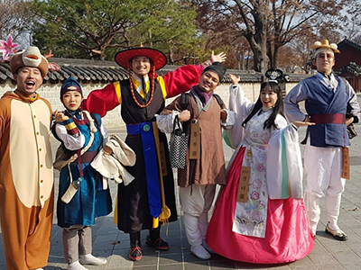
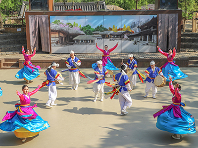
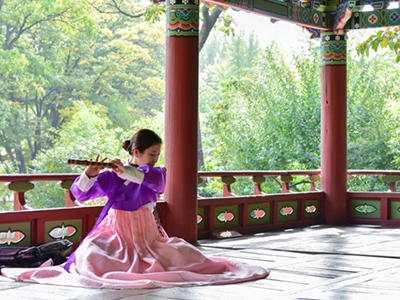
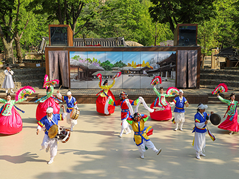
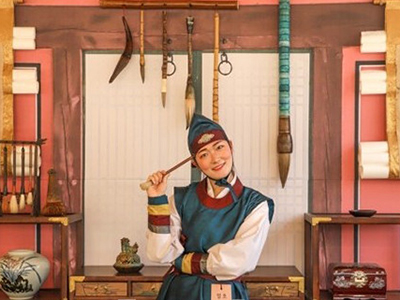
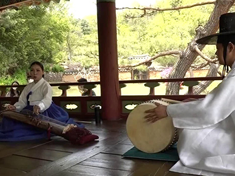
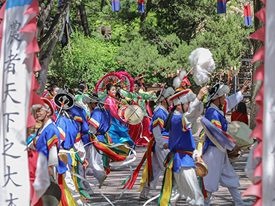
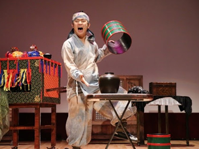

> 공연 · 행사 > 공연마당
공연마당
오늘의 공연
흥겨움이 넘치는 공연과 함께 즐거운 시간 보내세요
오늘은 년 월 일 입니다.
-

- 어서오시오
- [조선에 당도한 것을 환영하오]
조선마을 사람들의 신나는 환영 인사 신나는 안무를 함께하며
민속촌을 즐겨보세요 - 공연시간
1회 공연 10시 00분
공연장소 상가마을
-

- 풍물한가락
- [아름답고 흥겨운 전통 가무악의 향연]
한국의 전통적인 가무악으로 구성된 넌버벌 퍼포먼스로
남녀노소, 내외국인 모두가 공감하며 즐길 수 있는 공연 - 공연시간
1회 공연 11시 00분 2회 공연 16시 00분
공연장소 농악공연장
-

- 우리가락 좋을씨고
- [전통가락이 전해주는 작은 행복]
우리 기악으로 만나는 꽃놀이 특별 선곡 라이브 공연 - 공연시간
1회 공연 11시 30분 2회 공연 14시 30분 3회 공연 16시 30분
공연장소 민향
-

- 삼도판 굿
- [무아경에 빠져들게 만드는 신명의 가락]
우리나라 지방 곳곳의 중요 가락을 한 데 모은 경쾌한 연주곡에
버나놀음과 열두발 상모 등 역동성이 가미된 흥겨운 공연 - 공연시간 1회 공연 12시 30분
공연장소 농악공연장
-

- 도화서 취재
- [솜씨 있는 화원을 뽑는 화원 특채 시험]
바쁜 도화서에 새로운 화원을 뽑는 도화서 취재!
장원에게는 사또의 생일잔치 VIP 입장권을 증정하고
추억도 만들 수 있는 관람객 참여형 이벤트 - 공연시간 1회 공연 13시 00분
공연장소 상설체험장
-

- 소리한마당
- [우리 고유의 한과 정서가 담긴 판소리 공연]
우리 소리로 만나는 꽃놀이 특별 선곡 라이브 공연 - 공연시간 1회 공연 13시 00분 2회 공연 15시 30분
공연장소 민향
-

- 얼씨구절씨구야
- [전통춤과 코믹 마당극이 어우러진 민속 퍼레이드]
전통예술의 아름다움을 고스란히 느낄 수 있는 행렬에
익살스러운 춘향전 퍼포먼스를 더한 민속촌 만의 이색 퍼레이드 - 공연시간 1회 공연 14시 00분
공연장소 상가마을
-
- 사또의 생일잔치
- [9년 연속 인기만발! 웰컴투조선 시그니처 공연]
웃음과 풍자가 가득한 퓨전 마당극, ‘사또의 생일잔치’.
올해는 유명 마술사와 깜짝 방문객까지 기다리고 있다는데.. - 공연시간 1회 공연 15시 00분
공연장소 관아
-

- 조선마술실록
- [실록이 담지 못한 민중의 이야기가 펼쳐지는 화려한 전통 마술의 세계]
지극한 효심을 가진 조선 마술사가 관객들의 심금을 울리는
감동적인 마술쇼, 조선마술실록 - 공연시간 1회 공연 17시 00분
공연장소 농악공연장